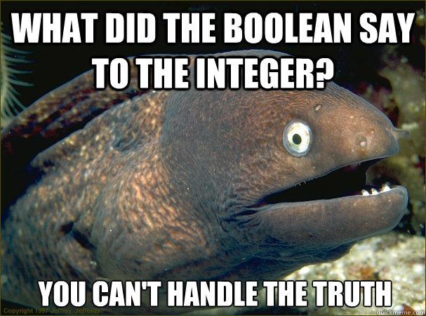
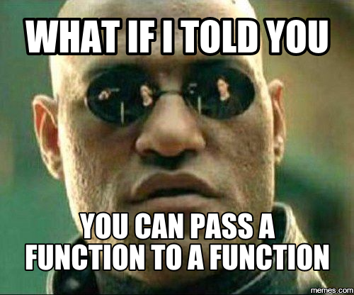
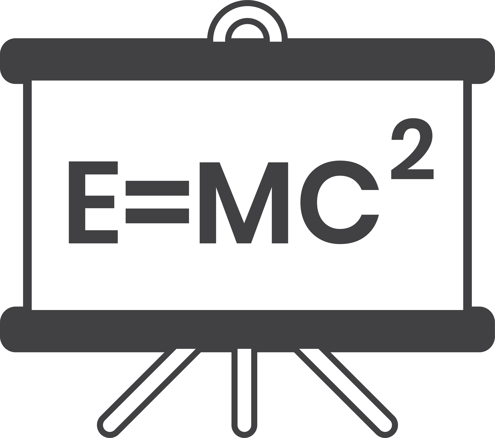
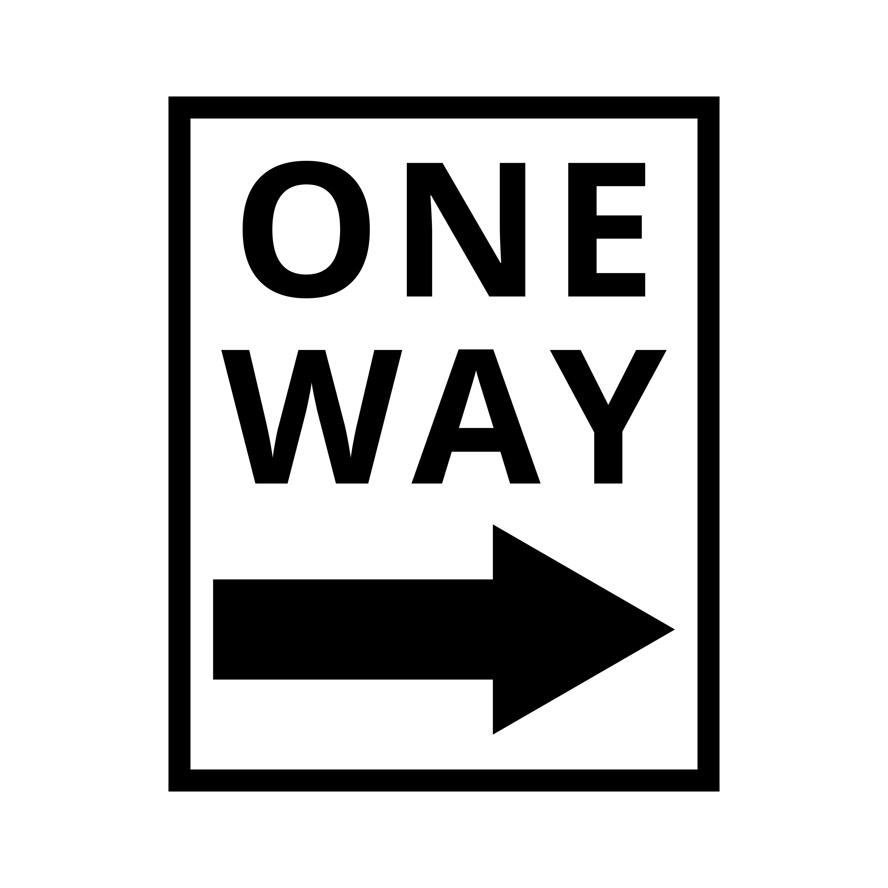

Przetwarzanie równoległe i strumieniowe
Wykład 2
Struktury danych, programowanie funkcyjne, strumienie w Python


Plan wykładu
list, tuple, dict, set, list comprehensions, zip
funkcje jako obiekty, czyste funkcje, memoizacja
protokół iteratora, yield, leniwa ewaluacja
lambda, map, filter, reduce, itertools, potoki generatorów, MapReduce
Dlaczego to na tym przedmiocie?
Czyste funkcje nie mają współdzielonego stanu, więc łatwo je zrównoleglić bez wyścigów (race condition z wykładu 1).
Generatory przetwarzają dane element po elemencie, czyli tak samo jak systemy strumieniowe (Apache Flink, Kafka Streams) z drugiej części semestru.
Struktury danych

http://www.quickmeme.com/meme/3t5jki
Listy są mutowalne
Listę można zmieniać „w miejscu”. Przypisanie b = a nie kopiuje listy: obie nazwy wskazują na ten sam obiekt.
a = [1, 2, 3]
b = a # b to druga nazwa tej samej listy
b.append(4)
print(a)
Co wypisze print(a)?
a i b to ten sam obiekt. Kopię tworzymy przez b = a.copy() albo b = list(a).
| Mutowalne | Niemutowalne |
|---|---|
listdictsetbytearray | int, float, boolstrtuplefrozenset, bytes |
Wykład 1: wątki jednego procesu współdzielą pamięć. Współdzielony mutowalny obiekt to przepis na wyścig.
Obiekt niemutowalny można bezpiecznie czytać z wielu wątków naraz.
Struktury danych - krotki (tuple)
Krotki to niemutowalne sekwencje. Krotkę tworzy przecinek, a nawiasy dodajemy dla czytelności: (5,) to krotka, a (5) to liczba 5.
t = (5, 6, 7, 8)
t[0] = 1 # TypeError: 'tuple' object does
# not support item assignment
t = t[:1] + (99,) + t[2:] # "zmiana" to nowa krotka:
# (5, 99, 7, 8)
Krotki często zwracają kilka wartości z funkcji (return min_, max_), a dzięki niemutowalności mogą być kluczami słownika.
Rozpakowanie:
a, b, c, d = t # tyle zmiennych, ile elementów
a, b = b, a # zamiana bez zmiennej pomocniczej
first, *rest = t # first = 5, rest = [99, 7, 8]
x, y = (1, 2, 3) # ValueError: too many values
# to unpack (expected 2)
Struktury danych - list comprehensions
List comprehension przypomina notację matematyczną: S = { x² : x ∈ {0 … 9} } to w Pythonie
S = [x**2 for x in range(10)] # uwaga: ^ to w Pythonie XOR, potęga to **
Ogólna postać: [wyrażenie for nazwa in kolekcja if warunek]. Gdy elementy są krotkami, możemy je od razu rozpakować:
li = [3, 6, 2, 7]
print([e * 2 for e in li if e > 2])
pary = [('a', 1), ('b', 2), ('c', 7)]
print([n * 3 for (x, n) in pary])
Co wypisze ten kod?
Warunek if odrzuca 2. Krotki rozpakowujemy do x i n. Nieużywaną zmienną zwyczajowo nazywa się _: [n * 3 for _, n in pary].
Nie tylko listy: comprehensions
| Składnia | Wynik |
|---|---|
[x % 3 for x in range(6)] | lista [0, 1, 2, 0, 1, 2] |
{x % 3 for x in range(6)} | zbiór {0, 1, 2} |
{x: x**2 for x in range(4)} | słownik {0: 0, 1: 1, 2: 4, 3: 9} |
A co zwróci wersja w nawiasach okrągłych: (x**2 for x in range(4))?
To wyrażenie generatorowe: leniwy iterator, który nie liczy niczego, dopóki nie pobierzemy elementów. Krotkę dostaniemy przez tuple(x**2 for x in range(4)). Do generatorów wrócimy w trzeciej części wykładu.
Struktury danych - słowniki (dict)
Słowniki przechowują pary klucz-wartość. Od Pythona 3.7 zachowują kolejność wstawiania kluczy.
params = {"a": 1.0, "b": 2.0}
params["a"] = "A" # zmiana wartości
params["c"] = 3.0 # nowa para
print(params.get("x", 0)) # brak klucza: wartość domyślna
for key, val in params.items(): # pary (klucz, wartość)
print(key, "->", val)
print(params["x"]) # brak klucza: wyjątek
0 a -> A b -> 2.0 c -> 3.0 KeyError: 'x'
for key in d iteruje po kluczach. d.keys(), d.values() i d.items() zwracają widoki, które odzwierciedlają późniejsze zmiany słownika.
Klucze muszą być hashowalne (w praktyce niemutowalne): str, int, tuple tak, list nie.
Struktury danych - zip
Funkcja zip() łączy elementy kilku sekwencji w krotki, jak zamek błyskawiczny. Wynik łatwo zamienić na słownik funkcją dict().
>>> keys = ['a', 'b', 'c']
>>> values = [1, 2, 3]
>>> zip(keys, values) # leniwy iterator!
<zip object at 0x7f1c2a3b4e80>
>>> list(zip(keys, values))
[('a', 1), ('b', 2), ('c', 3)]
>>> dict(zip(keys, values))
{'a': 1, 'b': 2, 'c': 3}
>>> list(zip([1, 2, 3], "ab")) # kończy na najkrótszej
[(1, 'a'), (2, 'b')]
>>> list(zip(*[('a', 1), ('b', 2)])) # "rozpinanie"
[('a', 'b'), (1, 2)]
zip(a, b, strict=True) (Python 3.10+) zgłosi ValueError, gdy sekwencje mają różne długości, zamiast po cichu uciąć dane.
Pokrewna funkcja: enumerate("abc") daje (0, 'a'), (1, 'b'), (2, 'c').
Zbiory (set) i operator in
Zbiory to mutowalne kolekcje unikalnych, nieuporządkowanych elementów. Niemutowalną wersją jest frozenset.
>>> {1, 2, 2, 3, 3, 3} # duplikaty znikają
{1, 2, 3}
>>> s = set("abrakadabra")
>>> s # kolejność może być inna
{'k', 'a', 'r', 'b', 'd'}
>>> "k" in s, "z" in s
(True, False)
| Operacja | Przykład |
|---|---|
suma a | b | {1, 2, 3} | {3, 4} → {1, 2, 3, 4} |
część wspólna a & b | {1, 2, 3} & {2, 3, 4} → {2, 3} |
różnica a - b | {1, 2, 3} - {2} → {1, 3} |
różnica symetryczna a ^ b | {1, 2, 3} ^ {3, 4} → {1, 2, 4} |
Koszt operatora in: dla listy przegląda elementy po kolei, czyli O(n). Dla set i dict (sprawdza klucze) korzysta z tablicy haszującej, czyli średnio O(1). Gdy wielokrotnie sprawdzamy przynależność do dużej kolekcji, zamieńmy listę na zbiór.
Sprawdź się
Co może być kluczem słownika lub elementem zbioru? (zaznacz wszystkie)
Klucze i elementy zbioru muszą być hashowalne, czyli w praktyce niemutowalne: krotki, napisy, liczby, frozenset. Lista i zbiór są mutowalne, więc nie mogą.
Jaki typ ma {}?
{} to pusty słownik. Pusty zbiór tworzymy przez set().
Funkcje

https://blog.kotlin-academy.com/programmer-dictionary-higher-order-function-9cadb07df94e
Funkcje
Funkcje w Pythonie są obiektami (obiektami „pierwszej klasy”): można je przypisać do zmiennej, przekazać jako argument i zwrócić z innej funkcji.
def g():
print("Hi, it's me 'g'")
def f(func):
print("Hi, it's me 'f'")
func()
f(g) # przekazujemy funkcję, nie g()!
Hi, it's me 'f' Hi, it's me 'g'
def mnoznik(k):
def razy(x):
return x * k
return razy # zwracamy funkcję
podwoj = mnoznik(2)
print(podwoj(21))
print(mnoznik(3)(5))
42 15
Funkcja, która przyjmuje lub zwraca funkcję, to funkcja wyższego rzędu (higher-order function). Przykłady z biblioteki standardowej: map, filter, sorted(key=...).
Programowanie funkcyjne
Programowanie funkcyjne, jak sama nazwa wskazuje, polega na definiowaniu wykonania programu jako wywołań funkcji.
Pozwala pisać prostszy, niezależny, krótszy kod, który łatwiej przetestować oraz zrównoleglić.
Programowanie funkcyjne opiera się na tzw. czystych funkcjach (pure functions).

Czyste funkcje (pure functions)
Funkcja jest czysta, jeśli:
- zawsze zwraca ten sam wynik dla tych samych argumentów,
- nie ma skutków ubocznych: nie zmienia argumentów ani zmiennych globalnych, nie wypisuje na konsolę, nie zapisuje do plików ani bazy danych,
- nie zależy od stanu zewnętrznego: zmiennych globalnych, czasu, liczb losowych, zawartości plików.
Jedynym wynikiem wywołania czystej funkcji jest wartość zwracana.
Czyste i nieczyste funkcje
- Czyste:
len("abc"),pow(x, y),math.sqrt(x)
- Nieczyste:
print()(zmienia stan: wypisuje na ekran),random.randint(x, y)itime.time()(zależą od stanu globalnego)
>>> len("abc") # czysta
3
>>> math.sqrt(2) # czysta
1.4142135623730951
>>> pow(2, 2) # czysta
4
>>> print('abc') # skutek uboczny
abc
>>> random.randint(1, 22) # stan generatora
14
>>> time.time() # zegar systemowy
1678135234.6053753
Uruchom dwa razy: wyniki trzech ostatnich wywołań się zmienią.
Czyste funkcje i memoizacja
Skoro wynik czystej funkcji zależy tylko od argumentów, można go zapamiętać i nie liczyć ponownie (memoizacja). Podobnie kompilatory C/C++ optymalizują wywołania funkcji, o których wiedzą, że są czyste.
from functools import cache
@cache
def fib(n):
return n if n < 2 else fib(n - 1) + fib(n - 2)
print(fib(100))
print(fib.cache_info())
354224848179261915075 CacheInfo(hits=98, misses=101, maxsize=None, currsize=101)
Bez @cache wywołanie fib(100) wykonywałoby się dłużej niż istnieje wszechświat: liczba wywołań rośnie wykładniczo.
@cache na funkcji nieczystej (np. czytającej czas albo plik) będzie zwracać nieaktualne wyniki.
Czysta czy nie? (1/2)
l = [1, 2, 3]
def last(l):
return l[-1]
Czysta: tylko odczytuje argument i zwraca wartość.
m = ''
def add(a, b):
global m
m = 'added'
return a + b
Nieczysta: zmienia globalny stan (zmienną m).
l = [1, 2, 3]
def last(l):
return l.pop()
Nieczysta: pop() zmienia wejściową listę, więc drugie wywołanie zwróci coś innego.
Czysta czy nie? (2/2)
min(3, 1, 2)
Czysta: wynik zależy tylko od argumentów.
K = 10
def add10(a):
return a + K
Nieczysta: korzysta z globalnego stanu. Po K = 20 ten sam argument da inny wynik.
def dopisz(x, lista=[]):
lista.append(x)
return lista
Nieczysta, i to podstępnie: domyślna lista powstaje raz. dopisz(1) daje [1], a potem dopisz(2) daje [1, 2]. Poprawnie: lista=None i nowa lista w środku funkcji.
Python a programowanie funkcyjne
Programy w Pythonie mają często funkcyjnie wyglądający interfejs, ale wewnętrznie używają niefunkcyjnych operacji (przypisań, pętli).
Funkcja może zmieniać swoje zmienne lokalne. Dopóki nie zmienia zmiennych globalnych ani nie ma innych skutków ubocznych, z zewnątrz pozostaje czysta.
Przykład:
def suma_kwadratow(liczby):
wynik = 0 # lokalny, zmienny stan...
for x in liczby:
wynik += x * x
return wynik # ...ale z zewnątrz funkcja jest czysta
# to samo w stylu funkcyjnym
def suma_kwadratow(liczby):
return sum(x * x for x in liczby)
Programowanie funkcyjne - zalety i wady
Zalety
- łatwe debugowanie i testowanie
- modularność
- leniwa ewaluacja (lazy evaluation)
- wykonanie równoległe
- czytelność
Wady
- trudne do opanowania
- czasem trudno uniknąć kontekstu (stanu)
- kopiowanie zamiast modyfikacji w miejscu kosztuje pamięć i czas
Iteratory
Iterator to obiekt, który reprezentuje strumień danych i zwraca kolejne elementy jeden po drugim.
- Metoda __next__() (wywoływana przez
next(it)) nie przyjmuje argumentów i zwraca następny element, a metoda __iter__() zwraca sam iterator. - Gdy elementów już nie ma,
__next__()zgłasza wyjątek StopIteration. - Iterator nie musi być skończony: iterator generujący nieskończony strumień danych jest całkowicie poprawny.
Jak działa pętla for?
Pętla
for x in L:
print(x)
jest w rzeczywistości wykonywana tak:
it = iter(L) # 1. pobierz iterator
while True:
try:
x = next(it) # 2. pobierz kolejny element
except StopIteration: # 3. koniec strumienia
break
print(x)
Iterable (obiekt iterowalny): ma metodę __iter__(), która zwraca iterator. Przykłady: lista, krotka, napis, słownik, zbiór, plik.
Iterator: ma __next__() i __iter__(), pamięta, w którym miejscu strumienia jest.
Z tego protokołu korzystają też list(), sum(), zip(), in, rozpakowanie a, b = ... i list comprehensions.
Nieskończony iterator
from collections.abc import Iterator
class Licznik(Iterator):
def __init__(self, start=0, krok=1):
self.c, self.krok = start - krok, krok
def __next__(self):
self.c += self.krok
return self.c
licznik = Licznik(0, 1)
print(next(licznik))
print(next(licznik))
0 1
Dziedziczenie po collections.abc.Iterator dostarcza gotową metodę __iter__(), więc wystarczy napisać __next__().
__next__() nigdy nie zgłasza StopIteration, więc strumień jest nieskończony. Nie wywołuj na nim list()!
Biblioteka standardowa ma gotowy odpowiednik: itertools.count(start, step).
iter() i next()
Wbudowana funkcja iter() zwraca iterator dla obiektu. Jeśli obiekt nie pozwala na iterację, zgłasza TypeError: iter(42) daje 'int' object is not iterable.
Iterację obsługują wszystkie wbudowane kolekcje (listy, krotki, napisy, słowniki, zbiory), a także pliki.
next(it) to wygodny zapis it.__next__(), tak jak len(x) zamiast x.__len__().
Tak wygląda traceback w nowym REPL Pythona 3.13: <python-input-N> zamiast dawnego <stdin> oraz podkreślenie wywołania, które zgłosiło wyjątek.
>>> L = [3, 4, 5]
>>> it = iter(L)
>>> it
<list_iterator object at 0x7f36682eea70>
>>> next(it) # to samo co it.__next__()
3
>>> next(it)
4
>>> next(it)
5
>>> next(it)
Traceback (most recent call last):
File "<python-input-6>", line 1, in <module>
next(it)
~~~~^^^^
StopIteration
>>> next(it, "koniec") # wartość domyślna zamiast wyjątku
'koniec'
Iterator działa tylko do przodu
W iteratorze można iść tylko do przodu: nie można wrócić do poprzedniego elementu, skopiować iteratora ani go zresetować.
Funkcja może przetworzyć całe wyjście iteratora, ale żeby zrobić coś innego z tym samym strumieniem, trzeba utworzyć nowy iterator.
>>> it = iter([1, 2, 3])
>>> list(it)
[1, 2, 3]
>>> list(it) # iterator jest już wyczerpany
[]

Generatory
Generatory to specjalny rodzaj funkcji, który upraszcza pisanie iteratorów. Zwykła funkcja oblicza wartość i ją zwraca, a generator zwraca iterator, który produkuje strumień wartości.
def generate_ints(N):
for i in range(N):
yield i
yield działa podobnie do return, ale funkcja się nie kończy: zostaje wstrzymana razem ze zmiennymi lokalnymi i wznawia działanie przy kolejnym next().
Generatory nie przechowują wszystkich wartości w pamięci, generują je w locie.
Generator krok po kroku
Stan generatora pokazuje inspect.getgeneratorstate(gen), a jego zmienne lokalne inspect.getgeneratorlocals(gen).
Wyrażenia generatorowe i pamięć
Krótki generator można zapisać jak list comprehension, tylko w nawiasach okrągłych:
import sys
lista = [x * x for x in range(1_000_000)] # wszystkie wartości od razu w pamięci
gen = (x * x for x in range(1_000_000)) # wartości liczone na żądanie
print(sys.getsizeof(lista))
print(sys.getsizeof(gen))
print(sum(x * x for x in range(1_000_000))) # nawiasy wywołania funkcji wystarczą
8448728 200 333332833333500000
Lista zajmuje ok. 8 MB, a generator ok. 200 B niezależnie od liczby elementów. Do tego getsizeof listy liczy tylko tablicę referencji, bez samych obiektów int.
Generator przejdziemy tylko raz. Jeśli dane są potrzebne wielokrotnie albo potrzebujemy len() czy indeksowania, wybierzmy listę.
Leniwa ewaluacja
Leniwa ewaluacja (lazy evaluation, call-by-need) opóźnia obliczenie wyrażenia do momentu, gdy jego wartość jest naprawdę potrzebna. Iteratory i generatory zwracają jeden element na raz.
Dzięki temu możemy opisać nawet nieskończony ciąg liczb i pobrać z niego tylko tyle, ile potrzeba:
from itertools import islice
def fibonacci():
a, b = 0, 1
while True: # nieskończona pętla, ale leniwa
yield a
a, b = b, a + b
print(list(islice(fibonacci(), 10)))
[0, 1, 1, 2, 3, 5, 8, 13, 21, 34]
list(fibonacci()) nigdy się nie skończy: lista musi mieć wszystkie elementy naraz.
Listy vs generatory: symulacja
dane = range(1, 11)
kw = [x * x for x in dane] # lista: liczy wszystko od razu
pa = [y for y in kw if y % 2 == 0] # lista
wynik = pa[:3]
dane = range(1, 11)
kw = (x * x for x in dane) # generator: nic jeszcze nie liczy
pa = (y for y in kw if y % 2 == 0) # generator
wynik = list(islice(pa, 3)) # dopiero tutaj dane zaczynają płynąć
wywołań x * x: 0 | testów % 2 == 0: 0
Lambdy
lambda tworzy małe, anonimowe funkcje: dowolna liczba argumentów, ale tylko jedno wyrażenie, którego wartość jest zwracana (bez pętli, return i przypisań).
def f1(x):
return x**2
f1 = lambda x: x**2 # to samo jako lambda
(lambda x, y: x + y)(2, 3) # 5
lambda x: x if x > 0 else -x # wyrażenie warunkowe jest dozwolone
list(map(lambda x: x**2, range(-3, 4))) # [9, 4, 1, 0, 1, 4, 9]
Lambda najlepiej sprawdza się w miejscu użycia, jako argument innej funkcji: map, filter, sorted(key=...).
Zgodnie z PEP 8 nie przypisujemy lambdy do nazwy (jak f1 obok). Jeśli funkcja ma mieć nazwę, użyjmy def: komunikaty błędów są wtedy czytelniejsze.
Lambdy w praktyce: key=
Najczęstsze użycie lambdy to argument key, czyli funkcja wyznaczająca, po czym porównujemy elementy:
studenci = [("Ola", 4.5), ("Jan", 3.0), ("Ewa", 5.0)]
sorted(studenci, key=lambda s: s[1])
# [('Jan', 3.0), ('Ola', 4.5), ('Ewa', 5.0)]
sorted(studenci, key=lambda s: s[1], reverse=True)[0]
# ('Ewa', 5.0)
max(studenci, key=lambda s: s[1])
# ('Ewa', 5.0)
sorted(["kiwi", "jabłko", "fig"], key=len) # zwykła funkcja też działa
# ['fig', 'kiwi', 'jabłko']
Ten sam argument key przyjmują min, max, sorted, list.sort i itertools.groupby.
map i filter
map(f, it, ...) wywołuje f dla każdego elementu (przy kilku sekwencjach dla kolejnych elementów każdej z nich). filter(f, it) zostawia tylko elementy, dla których f zwraca wartość prawdziwą. W Pythonie 3 obie zwracają leniwe iteratory, a nie listy.
a = [1, 2, 3, 4, 5, 6]
map(lambda x: x * 2, a) # <map object at 0x...>
list(map(lambda x: x * 2, a)) # [2, 4, 6, 8, 10, 12]
list(map(lambda x, y: x + y, [1, 2, 3], [10, 20, 30])) # [11, 22, 33]
list(filter(lambda x: x % 2 == 0, a)) # [2, 4, 6]
[x * 2 for x in a] # to samo jako comprehension
[x for x in a if x % 2 == 0]
Gdy funkcja już istnieje, map jest zwięzły: map(str.upper, slowa), map(int, linia.split()). Z lambdą zwykle czytelniejsze jest comprehension.
Sprawdź się
m = map(str.upper, ["a", "b"])
print(list(m))
print(list(m))
Co wypisze ten kod?
W Pythonie 3 map zwraca iterator. Pierwsze list(m) go wyczerpuje, drugie dostaje pusty strumień. Jeśli potrzebujesz danych kilka razy, zapisz je w liście: wynik = list(map(...)).
reduce
Funkcja reduce(f, iterable[, initial]) „zwija” sekwencję do jednej wartości. Funkcja f dostaje wewnętrzny akumulator i kolejny element, a jej wynik staje się nowym akumulatorem.
from functools import reduce # w Pythonie 3 reduce jest w functools
reduce(lambda n, m: n * m, range(1, 10)) # 362880
reduce(lambda n, m: n * m, range(1, 11)) # 3628800 = 10!
reduce(lambda acc, x: acc + x, [], 0) # 0: wartość początkowa
reduce(lambda acc, x: acc + x, []) # TypeError: reduce() of
# empty iterable with no initial value
range(1, 10) to liczby 1…9, więc pierwszy wynik to 9!, a nie 10!.
Typowe redukcje mają gotowe funkcje: sum(), math.prod(), max(), min(), any(), all().
map, filter, reduce: spróbuj sam
Zmień dane lub funkcje. Ustaw filter na x > 100: co się stanie z reduce bez wartości początkowej?
Po co nam to na PRS?
from concurrent.futures import ProcessPoolExecutor
def ciezka_funkcja(n): # czysta funkcja
return sum(i * i for i in range(n))
dane = [10_000_000] * 8
if __name__ == "__main__":
wyniki = list(map(ciezka_funkcja, dane)) # po kolei
with ProcessPoolExecutor() as ex: # równolegle
wyniki = list(ex.map(ciezka_funkcja, dane))
map: 1 proces
ex.map: 4 procesy
czas → 8 wywołań ciezka_funkcja
ex.mapma ten sam interfejs comap: zmieniamy jedną linię.- Działa poprawnie, bo funkcja jest czysta: brak współdzielonego stanu, więc nie ma wyścigów.
- Procesy zamiast wątków, bo obliczenia są CPU-bound, a w standardowym CPythonie jest GIL (wykład 1). W wersji free-threaded (3.13t) równolegle zadziała też
ThreadPoolExecutor. if __name__ == "__main__":jest wymagane, bo procesy potomne importują ten moduł.
Szczegóły: wykład „Thread Pool, Executory w Python” (18.11).
itertools: klocki do strumieni
Moduł itertools zawiera gotowe, leniwe operacje na iteratorach:
| Wywołanie | Kolejne elementy | Skojarzenie |
|---|---|---|
count(10, 5) | 10, 15, 20, 25, … (bez końca) | nieskończone źródło |
islice(it, 4) | pierwsze 4 elementy dowolnego iteratora | „weź n” |
takewhile(lambda x: x < 100, fibonacci()) | 0, 1, 1, 2, 3, 5, …, 89 | „weź, dopóki” |
chain([1, 2], "ab") | 1, 2, 'a', 'b' | sklejanie strumieni |
accumulate([3, 1, 4, 1, 5]) | 3, 4, 8, 9, 14 | agregacja na bieżąco |
pairwise([20, 22, 25, 31]) | (20, 22), (22, 25), (25, 31) | okno przesuwne |
batched(range(7), 3) | (0, 1, 2), (3, 4, 5), (6,) | przetwarzanie wsadowe |
pairwise jest dostępne od Pythona 3.10, a batched od 3.12 (od 3.13 z opcją strict=True, która zgłasza błąd przy niepełnej ostatniej partii). Okna i partie wrócą przy Apache Flink (okna czasowe), a wsady pamiętamy z symulacji na wykładzie 1.
Potok generatorów = strumień
from itertools import islice
def odczyty(sciezka): # źródło: plik z milionami linii
with open(sciezka) as f:
for linia in f:
yield linia
def parsuj(linie): # transformacja
for linia in linie:
czujnik, temp = linia.strip().split(";")
yield czujnik, float(temp)
pomiary = parsuj(odczyty("czujniki.csv"))
alarmy = ((c, t) for c, t in pomiary if t > 30) # filtr
for czujnik, temp in islice(alarmy, 3): # ujście
print("ALARM", czujnik, temp)
- W pamięci jest zawsze tylko jedna linia pliku.
- Po 3 alarmach program kończy pracę, a reszta pliku nie jest nawet czytana.
- Ten sam model (źródło → operatory → ujście) zobaczymy w Apache Flink i Kafka Streams.
ALARM czujnik1 31.2 ALARM czujnik0 33.4 ALARM czujnik2 35.1
MapReduce: liczenie słów
import re
from functools import reduce
from collections import defaultdict
slowa = re.findall(r"\w+", tekst.lower())
pary = map(lambda w: (w, 1), slowa) # MAP
grupy = defaultdict(list) # SHUFFLE:
for w, n in pary: # grupowanie
grupy[w].append(n) # po kluczu
wynik = {w: reduce(lambda a, b: a + b, ns) # REDUCE
for w, ns in grupy.items()}
W Hadoop i Spark etapy map i reduce działają równolegle na wielu maszynach, co jest możliwe dzięki czystym funkcjom. W zwykłym Pythonie wystarczy collections.Counter(slowa).
Map
Shuffle
Reduce
Wpisz własny tekst: wynik liczy się na bieżąco.
Ćwiczenia
Znajdź część wspólną dwóch list:
a = [1, 2, 3, 5, 7, 9]
b = [2, 3, 5, 6, 7, 8]
list(filter(, b)) # [2, 3, 5, 7]
Znajdź maksimum w liście:
from functools import reduce f = reduce(f, [47, 11, 42, 102, 13]) # 102
W praktyce prościej i szybciej: set(a) & set(b) daje {2, 3, 5, 7} w czasie O(n + m) zamiast O(n·m), a max([47, 11, 42, 102, 13]) daje 102.
Podsumowanie wykładu
list,dict,setsą mutowalne, atuple,str,frozensetnie. Współdzielony mutowalny stan to ryzyko wyścigu.- Czysta funkcja: wynik zależy tylko od argumentów i nie ma skutków ubocznych. Łatwo ją testować, cache'ować i zrównoleglać.
- Iterator:
next()aż doStopIteration. Działa tylko do przodu i tylko raz. - Generator (
yieldlub wyrażenie generatorowe) jest leniwy, oszczędza pamięć i może być nieskończony. mapifilterzwracają leniwe iteratory, areducejest wfunctools.- Potok generatorów to w miniaturze model przetwarzania strumieniowego.